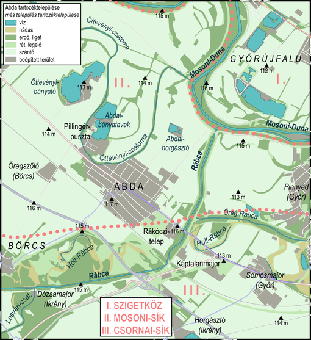

Abda
Abda


Bevezetés
Abda a Mosoni-sík és a Csornai-sík találkozásánál, a Rábca és a Mosoni-Duna által közrezárt, a régmúlt korokban vízjárta síksági területen fekszik.
Az ember szórványos megtelepedésének nyomai az újkőkorszak óta ismertek. A mai település elődje a „bécsi nagyúton” a 11. században létesített és a 12. századtól vámszedő helyként ismert Rábca-híd mellett alakult ki az Árpád-korban.
Az először 1153-ban Obda néven említett falu birtoklásán a 13. századtól a szentmártoni bencések és a győri székeskáptalan osztoztak. A 16. századtól a kizárólag a káptalan által birtokolt falu lakói a hídőrségnek tett szolgálataik fejében mentesültek a földesúri terhek alól.
A török hódoltság időszakában több ízben feldúlták a végvidéken fekvő Abdát, ezért 1588-ban kisebb tarisznyavár épült a Rábca-hídnál, amelynek német őrsége a 17. században több ízben sanyargatta a környék lakóit.
A Rákóczi-szabadságharc során, 1707-ben a kurucok lerontották az abdai várat, ezt követően a békés növekedés évszázada köszöntött a falura. 1739-ben önálló római katolikus egyházközség lett, és népiskolája is megkezdte a működést. Az egyre gyakoribb árvizek elől 1830-ban a falu a Rábca-parttól 2 kilométerrel nyugatabbra, mai helyére költözött, itt épült fel 1845-ben Szent József-temploma. A szabadságharc során, 1849. június 28-án egy kisebb vesztes csatára került sor az abdai hídnál.
A jobbágyfelszabadítás, a bécsi országút és a vasútvonal kiépülése, majd a folyamszabályozások következtében a 19. század második felétől Abda megerősödött. A zöldségtermesztéssel, szántóműveléssel és állattartással foglalkozó paraszti kisbirtokok mellett három uradalom határozta meg a falu gazdasági életét (Káptalanmajor, Pillingérpuszta, Szentkeresztpuszta), ezeknek köszönhetően jelentek meg az első ipari üzemek is a településen (téglagyár, szeszgyár stb.). A lakónépesség növekedésnek indult, az első és a második világháború pusztító harci cselekményei is szerencsésen elkerülték a települést.
Az 1930-as évektől a lakosság egyre nagyobb része a közeli nagyváros, Győr ipari létesítményeiben talált munkát. Az 1959-ben megalapított termelőszövetkezet kezdeti sikertelenségei után a kunszigeti termelőszövetkezettel való 1973. évi egyesülés után a település mezőgazdasága felvirágzott, emellett melléküzemei (kavicsbánya, lakatosműhely stb.) és egyes győri középvállalatok abdai üzemegységei (mezőgazdasági gépjavítás és -gyártás, virágkertészet, húsüzem stb.) az 1980-as évekre szintén nyereségesek lettek. A kedvező közlekedési adottságokkal, nagy nemzetközi átmenőforgalommal rendelkező településen az 1980-as évek végétől kibontakozott a kiskereskedelmi tevékenység, a bécsi országút mentén kialakult a híres-hírhedt abdai bazársor, a 85-ös út elágazásánál pedig a sok vendéget vonzó, egy Il–18-as repülőgép fedélzetén berendezett vendéglátó centrum (Elvis park). Virágzásuknak az M1-es autópálya 1996. évi átadásának következményeként az átmenőforgalom csökkenése vetett véget.
Fekvése

Abdát átszeli az 1-es főút, Győr városközpontjától 8, Mosonmagyaróvárétól 30 kilométerre fekszik.
A település külterületén, az 1-es főúttól indul ki a Győr és Sopron közötti 85-ös főút, illetve az M85-ös autóút; ez utóbbin keresztül Csorna 30, Kapuvár 52, Sopron pedig 93 kilométeres autóútra esik Abdától.
A település gyors összeköttetését az ország távolabbi, központi helyzetű területeivel az M1-es autópálya biztosítja, amelynek 129-es Győr-nyugati csomópontja a faluközponttól 5 kilométeres autózással érhető el; az autópályán a 134 kilométerre lévő Budapest mindössze másfél órás autózással elérhető. Abda vasúton a Budapest–Hegyeshalom–Rajka-vonalon fekszik saját vasúti megállóhellyel. A közeli nagyobb települések közül közvetlen autóbuszjárattal érhető el Győr, Lébény, Mosonmagyaróvár és Csorna.
Az Abdával határos települések a következők: keleten és délkeleten Győr, délen Ikrény, délnyugaton Börcs, északnyugaton Öttevény és Kunsziget, északon Győrzámoly, északkeleten pedig Győrújfalu.
Közúti összeköttetése a szomszédos települések egy részével közvetlen, az 1-es főúttal Győrhöz (8 km) és Öttevényhez (5 km), a 85-ös főúttal Ikrényhez (10 km) kapcsolódik, Börccsel (4 km) pedig a 85101-es út köti össze.
Északi szomszédai, a Szigetközben fekvő Győrújfalu (12 km) és Győrzámoly (15 km) csak kerülővel, Győrön – hosszabb kerülővel Kunszigeten – át közelíthetőek meg.
Forrás Wikipédia